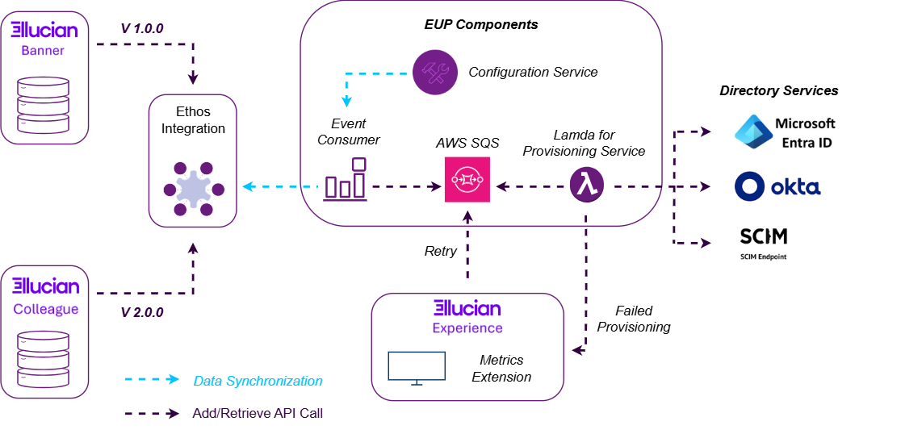
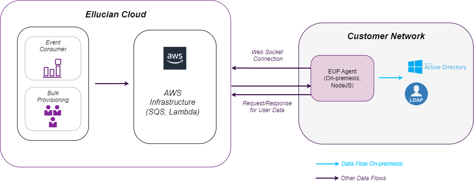

Introduction to Ethos User Provisioning
Ethos User Provisioning (EUP) is a cloud-based solution that supports both bulk and near real-time provisioning of users and groups from the Ellucian ERPs Banner and Colleague to third-party identity management services.
Higher education institutions can create and maintain user identity data within Ellucian, for example in its ERPs Banner or Colleague. As such, Ellucian is the system of record for this identity data—the user, role, and other critical details, including classification and location data, required to support authentication and other Identity and Access Management (IAM) processes within the institution. The challenge is to provision user identity data from Ellucian to an identity management service, enabling these institutions to centralize access management and enable Single Sign-on (SSO) access to all of their digital resources.
Ellucian has already developed and provided a number of provisioning solutions to address this critical requirement, for example Banner Enterprise Identity Services (BEIS) and Colleague LDAP. However, these solutions are tightly coupled with a specific Ellucian ERP, complex to use, and only support specific, on-premises identity management services.
Ethos User Provisioning (EUP) leverages the rich set of features provided by Ellucian Ethos to deliver a highly scalable, cloud-native solution that, by design, has the potential to integrate with any Ellucian product, including Banner and Colleague, through Ellucian Ethos Integration. It includes modern, easily navigable and accessible user interfaces that enable institutions to quickly configure the solution and monitor provisioning activity. It also supports a wider range of identity management services, both on-premises and in the cloud.
With EUP, identity data flows from Ellucian to an identity management service as users create and update this data, in Ellucian. You define the required configuration settings to facilitate this process, such as the mapping of the user attributes between Ellucian and the identity management service, in EUP.
Current feature set
Today, EUP supports integration with Banner, specifically Banner On-Premises, Banner SaaS, and Banner Managed Cloud. Ongoing development efforts for EUP are focused on the integration with other Banner solutions and other Ellucian applications and products. For more information, contact your account executive or customer success manager.
- Microsoft Entra ID (formerly Azure Active Directory, Azure AD)
- Okta LDAP
- On-premises agents—AD and LDAP
- System for Cross-domain Identity Management (SCIM) endpoints
Role mapping
User roles are a fundamental feature of any Identity and Access Management system as they determine the level of access a user has to specific digital resources and data. Administrators can define and maintain user roles in several Ellucian products and applications. So, for example, in Banner, you can assign roles to a user in the Maintain Self-Service User Roles (GUAUSRL) page, and the system stores the roles that you assign in this way using the Institution Role (GORIROL) table.
EUP enables institutions to map the user roles and assignments from GORIROL to the identity management service, that is EUP acts as a conduit to move these roles from Banner to the service. The default group type is Security, and the mapping uses an existing group, if this group exists. You can configure role mapping using the dedicated administrative interface that Ellucian provides for EUP.
Experience capability for provisioning
The provisioning of identity data is a mission-critical activity for any organization, but perhaps especially for higher education institutions. As such, an essential requirement for these institutions is that they can monitor all provisioning activity, with the ability to quickly investigate, troubleshoot, and resolve any errors.
To address this requirement, EUP includes Provisioning Metrics—an Ellucian Experience capability that enables institutions to monitor the flow of identity data from ell to the identity management service. It leverages all of the functionality provided by Experience platform to deliver a powerful, intuitive monitoring and troubleshooting tool that administrators can access from their Experience dashboard. Administrators can view summary metrics for all provisioning requests generated by EUP, and also view details about the requests for individual users. Provisioning Metrics also includes functionality managing these requests. So, for example, administrators use this capability to retry requests that have failed because of an availability issue with the identity management service.
Bulk provisioning and deprovisioning
EUP supports bulk provisioning of users and groups using a dedicated Ethos Data Connect integration package. Typical use cases for this feature include new institutions, who want to implement EUP and bulk provision existing users from Ellucian. Institutions that already have deployed EUP may also want to use this functionality if they have temporarily suspended real-time provisioning for some reason, for example during busy periods such as admission and registration windows. They can then bulk provision users before they enable real-time provisioning again.
To bulk provision users, you must create a pipeline job for the EUP integration package using a card on your Experience dashboard. You can specify different configuration settings when you create the job, including the population selection criteria, which determine the users that the job will provision to the identity management service. You can then run the pipeline job to provision these users. The bulk provision process will only create new users in the service, and will not update existing users.
EUP also supports the deprovisioning of users, for example, when a faculty member takes a sabbatical, or a student leaves a course. You configure the deprovisioning settings as part of the identity provider configuration.
EUP architecture
Ethos User Provisioning supports different deployment architectures for different identity providers. Some providers require an on-premises EUP agent, whereas other providers do not require this agent.
Architecture for Okta, Microsoft Entra ID, and SCIM

In this architecture, without the EUP agent, the change notification propagates from Banner or Colleague to Ethos Integration using the user-identity-profile data model to represent the user data in Ethos.
When the JSON request enters Ethos, it is consumed by the EUP Event Consumer, which creates the payload and pushes it to AWS SQS. Upon reaching the SQS, it will be consumed by a Lambda function that connects to the target IdP and inserts the records accordingly.
Architecture for LDAP and AD

- The authentication from the agent to Lambda uses configured tokens.
- SQS is created in advance, using a Terraform script.
- All Internet traffic is HTTP/WSS.
EUP API
The user-identity-profiles API is a critical component of the EUP architecture that enables the system to retrieve identity data from an integrated ERP.
The user-identity-profiles API is included in the API catalog—the consolidated library of all available APIs in any Ethos integration, including EUP. See About the API Catalog and API documentation for more information about the catalog and how to access reference documentation for every API it contains, including user-identity-profiles.
Background and usage
EUP uses the user-identity-profiles API to retrieve identity data for users, including roles, from an Ellucian ERP. It can then provision the same users in an Identity Provider (IdP) based on this data. The API does support change notifications and the EUP Event Consumer polls Ethos Integration at regular intervals to check for these notifications, which it can then process to create or update user account information in the IdP.
To facilitate this flow of data, from the ERP to the IdP, you must map specific fields in the user-identity-profiles API schema to the corresponding fields in the IdP. You can define this mapping in the EUP Administrative UI, and this is one of the most important configuration tasks that you must complete in this UI for EUP.
- Banner uses Version 1.0.0.
- Colleague uses Version 2.0.0.
The version of the API controls the field mappings that you must define as part of roles configuration in the UI. When defining this mapping, you may find it useful to check the API schema for the version of the API you are using in the API catalog. Note that you can easily switch between API versions in the catalog using the Version list near the top of any page in the catalog, below the title of the API. For convenience, Ellucian have categorized Version 2.0.0 as a Colleague Ethos Data Model API, but this version is ERP-agnostic, as noted.
| ERP | Notes |
|---|---|
| Banner | The GET operation retrieves identity data from gvq_cust_user_ident_profile, a non-materialized view of the GORIROL table in Banner. Do note that API calls do not recalculate roles in Banner. In other words, on a GET request, the user-identity-profiles API does not recalculate any PL/SQL from the GORRSQL form. |
| Colleague | To call the API, you must have the VIEW.ANY.PERSON permission. |